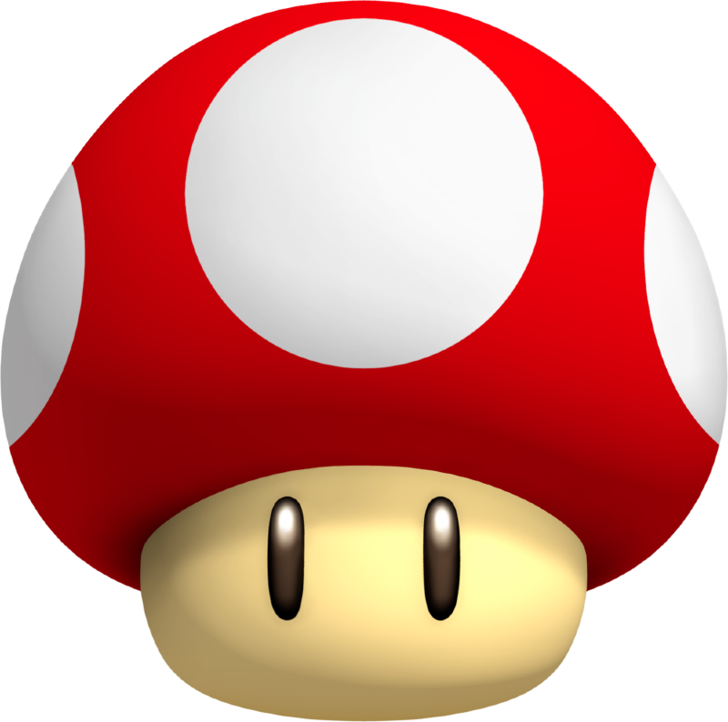

Curso Intensivo de Mern Stack; MongoDB é um banco de dados NoSQL orientado a documentos que oferece alta performance, alta disponibilidade e fácil escalabilidade. Ele é projetado para trabalhar com grandes volumes de dados distribuídos de forma eficiente e flexível, utilizando documentos no formato BSON (uma versão binária de JSON). Após a conclusão do curso, desenvolvi um banco de dados de uma bibioteca completo, com a inserção de livros, deletar livros repetidos, alterar uma informação ou até uma lista completa de livros.

Cursos Alura; A Alura compõe o maior ecossistema de ensino em tecnologia do Brasil e tem como missão transformar vidas e carreiras. Durante o curso de Análise e Desenvolvimento de Sistemas, eu desenvolvi grandes habilidades e conclui cursos de grande importância e prestígio para minha formação acadêmica. Cursos de UX: Desing Gráfico, Java Script e outras linguagens de programação.

React Native; React Native é um framework de código aberto criado pela Meta Platforms, Inc. É usado para desenvolver aplicativos para Android, Android TV, iOS, macOS, tvOS, Web, Windows, e UWP, permitindo que os desenvolvedores usem a estrutura React juntamente com os recursos nativos de cada plataforma. No desenvolver dos projetos escolares, nós desenvolvemos um aplicativo com o React Native. Esse aplicativo, juntamente com a lógica computacional, tem a função de gerar uma senha segura para contas em redes sociais, senhas bancárias e outras contas pessoais.

No segundo ano nós aprendemos sobre as linguagens de programação, e para aplicar esses conhecimentos, criamos um site sobre a estreia do filme "Super Mario Bros". Um site responsivo, com a principal tecnica o hover(Codigo para animação). O site apresenta a história dos personagens do filme de forma animada e colorida com os pixels.

Durante os 3 anos da conclusão do curso, com todas as habilidades adquiridas com o curso, eu desenvolvi um projeto por conta própria. Este projeto consiste em um site, na linguagem HTML e CSS, contemplando os conteúdos de Ciências da Natureza. Com o passar do tempo e com o progresso dos estudos, a atualização dos conteúdos de forma organizada é fundamental para o desenrolar dos estudos.